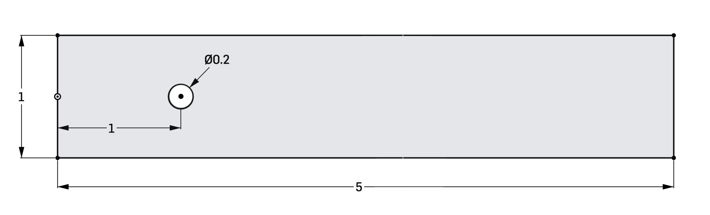

2D geometry
Even though figura is inherently 3-dimensional, 2D geometries are also possible.
Usually you can just set all z-coordinates to 0.
In this tutorial, we create a simple 2D rectangular channel with a circular obstacle.
Define some parameters, first:
WIDTH = 5 HEIGHT = 1 RADIUS = 0.1 CENTER = Point(1, 0, 0)
Create the rectangular channel
pt1 = Point(0, -HEIGHT/2, 0) pt2 = Point(WIDTH, -HEIGHT/2, 0) pt3 = Point(WIDTH, HEIGHT/2, 0) pt4 = Point(0, HEIGHT/2, 0) wire_rect = Wire([ Line(pt1, pt2), Line(pt2, pt3), Line(pt3, pt4), Line(pt4, pt1) ]) rect = Face(wire_rect)
Create the circular obstacle
wire_circ = Wire([ Circle(CENTER, RADIUS) ]) circ = Face(wire_circ)
Cut a “hole” into channel:
channel = rect.cut(circ)
Export the final result
export = [channel]